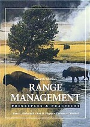

|  | Recommended reading |
|
This page is important because it provides supportive information for accomplishing our group's mission, which was presented on the previous page. Included first are a collection of educational handouts and articles under the following sub-headings:
Next, towards the bottom of the page, you will find a collection of essays. These reads are important because they provide useful information, and challenge people to THINK! If you know of an educational handout, article, or essay that needs to be added, please send us your suggestion e-mail. |
|
|
Miscellaneous information
Sustainable ranching systems
Recommended government programs
Texas ranching history
|
|
|
Back to TRC's index page |
|
|
http://www.texasranchingconservancy.com/reading.html | |